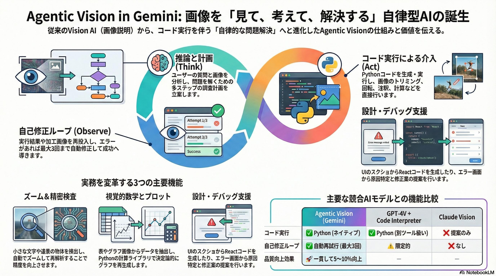

概要

「見て → 考えて → コードで解決」というエージェント的な振る舞いで、これまでのVision AIの限界を突破。人間の介入なしに、視覚情報から実行可能なソリューションまで一気通貫で処理できる革新的なシステムです。
Gemini 2.0 Code Execution Vision AI Agentic
ソース: Product Hunt | Gemini API Docs
自律ループのワークフロー
技術的特徴
🎨 マルチモーダル入力
画像、スクリーンショット、手書きメモ、PDF、チャート、UIモックアップなど、あらゆる視覚的入力に対応。複数画像の同時分析も可能。
💻 Pythonサンドボックス
生成されたコードは安全なサンドボックス環境で実行。NumPy、Pandas、Matplotlib、SymPyなど科学計算ライブラリがプリインストール。
📊 可視化自動生成
データ分析結果をMatplotlib/Plotlyでグラフ化。画像として出力されるので、そのまま資料に使用可能。
🔧 エラー自己修復
コード実行時にエラーが発生すると、スタックトレースを分析して自動修正。最大3回まで再試行。
🔒 セキュリティ分離
ネットワークアクセス無効、ファイルシステム制限、実行時間制限（30秒）など、厳格なセキュリティ制約。
🌱 ステートフル実行
チャットセッション内でコード実行状態を保持。前の実行結果を参照して、段階的に複雑な処理を構築可能。
使用例：Python API
基本的な使い方
データ分析の例
実践ユースケース
🔢 数学・科学計算
手書きの数式、物理の問題、化学式などを画像で渡すだけで、計算コードを生成して解答を導出。学生のノート写真から一発で答えを算出。
「この微分方程式を解いて、一般解をSymPyで求めて」+ 手書きノート画像
🎨 UI → コード変換
Figmaのデザイン、手書きワイヤーフレーム、UIスクリーンショットからHTML/CSS/Reactコンポーネントを自動生成。
「このモバイルアプリのスクショをReact Nativeコンポーネントに変換して」
📈 データ可視化
Excelスクリーンショット、手書きの表、PDFの統計データから、Pythonでデータを抽出してグラフ化。レポート作成を自動化。
「この売上表から月別トレンドと前年比グラフを作成して」
🔧 デバッグ支援
エラー画面のスクリーンショットから、スタックトレースを解析して原因を特定。修正コードまで提案。
「このエラー画面を見て、原因と修正方法をコードで示して」
📚 ドキュメント変換
フローチャート、ER図、アーキテクチャ図などの画像から、対応するコードやスキーマを自動生成。
「このER図からSQLAlchemyのモデル定義を生成して」
🎓 レガシー現代化
古いシステムのスクリーンショットから、現代的なWebアプリのコードを生成。COBOL画面→React変換なども。
「この80年代の端末画面を、モダンなWebUIとして再実装して」
競合比較
| 機能 | Agentic Vision (Gemini) | GPT-4V + Code Interpreter | Claude Vision |
|---|---|---|---|
| Vision入力 | ✅ 画像・動画・PDF | ✅ 画像・PDF | ✅ 画像・PDF |
| コード実行 | ✅ Python（サンドボックス） | ✅ Python（サンドボックス） | ❌ なし（提案のみ） |
| 自己修正ループ | ✅ 最大3回再試行 | ✅ 自動再試行 | ❌ 人間が修正 |
| Vision+Code統合 | ✅ ネイティブ統合 | ⚠️ 別ツール扱い | ❌ 分離 |
| API価格 | 入力$0.10/100万トークン | 入力$2.50/100万トークン | 入力$3.00/100万トークン |
| 無料枠 | ✅ 15 RPM無料 | ⚠️ 限定的 | ⚠️ 限定的 |
制限事項・注意点
🕒 実行時間制限
コード実行は最大30秒。長時間かかる機械学習トレーニングなどは不向き。
🔒 ネットワーク無効
サンドボックスからのネットワークアクセスは禁止。外部API呼び出しはできません。
💾 ファイルサイズ
生成される出力ファイル（画像等）にはサイズ制限あり。大量データ処理には注意。
🎯 対応言語
現在はPythonのみ。JavaScript、Rなど他言語は今後対応予定。
Gemini Vision進化の軌跡
関連リソース
業界インパクト
サプライズ度: ⭐⭐⭐⭐⭐
「見て説明する」AIから「見て解決する」AIへの進化。これにより：
- プロトタイピング高速化 - ホワイトボードのスケッチを即座にコード化
- ドキュメント自動処理 - 画像ベースのマニュアルからスクリプト生成
- データ分析民主化 - 非エンジニアでも「見せるだけ」で分析実行
- 教育革新 - 問題を写真に撮るだけで解法コード付き解答
- レガシー現代化 - 古いシステムのUIをモダンWebに変換
Vision × Code Execution × Agenticの三位一体が、AIエージェント時代の新しい標準を示唆しています。
「AIに画像を見せたら、人間より正確にコードを書いて実行してくれる」 ― これが2026年の新常識に。